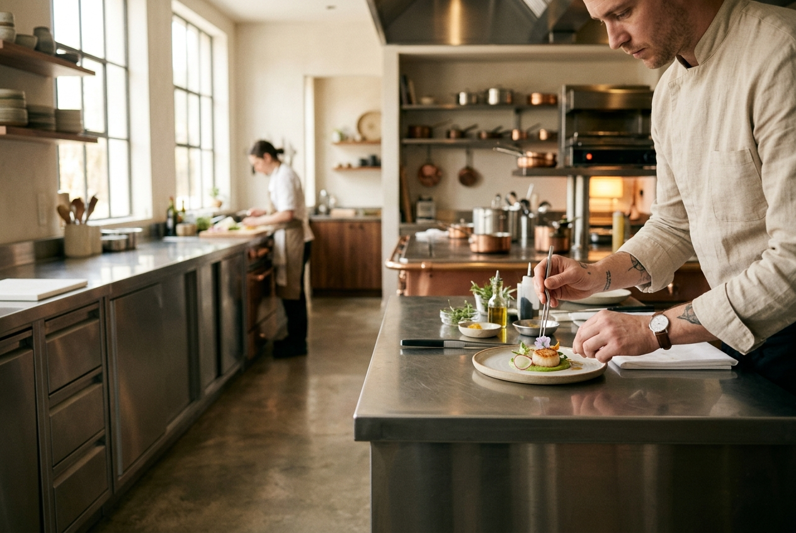
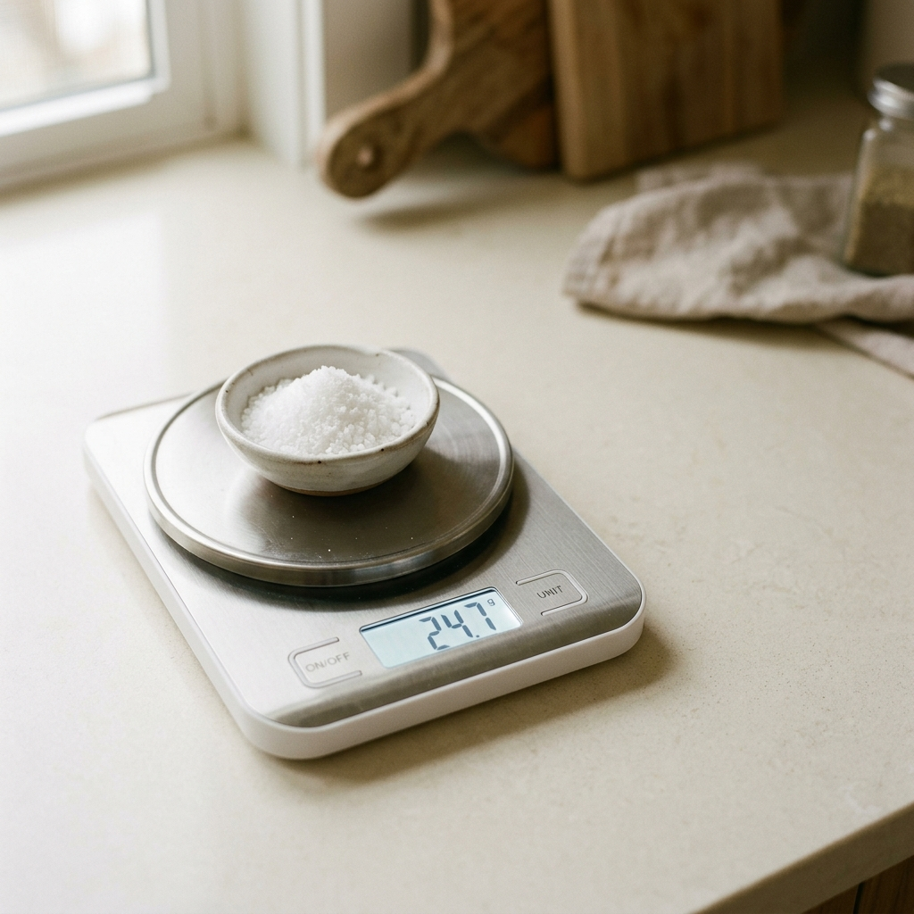
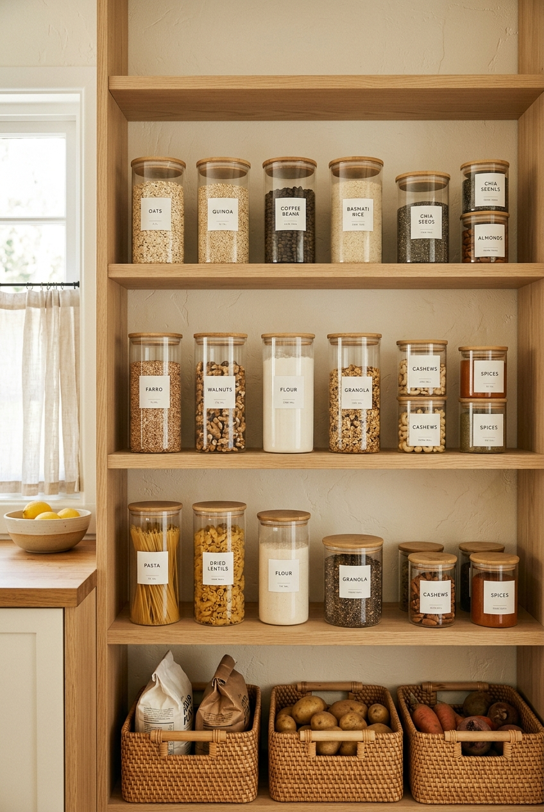

Nova entiende lo que pides en lenguaje natural y ejecuta el trabajo real de una cocina profesional: escandallos, producción, stock, cartas y control sanitario. Precisión de chef, velocidad de máquina.
Cada servicio son mil decisiones. Nova toma las repetitivas por ti —calcular, prever, cuadrar— para que tú te quedes con las que de verdad importan: el sabor, el pase, tu equipo.
Nada de formularios ni menús interminables. Escribes «hazme un escandallo para una lasaña de 40 raciones» y Nova entiende el plato, el volumen y lo que necesitas antes de que termines la frase.
Bajo cada respuesta hay un proceso disciplinado: analiza tu consulta, recupera tus datos y solo entonces responde. Nunca improvisa.
Tu cocina no empieza de cero cada día y Nova tampoco. Guarda tus recetas, tus proveedores, tus cartas y tus costes, y aprende de cada consulta para anticiparse a la siguiente.
Memoria temporal para el turno de hoy; memoria permanente para el negocio de siempre. Todo tuyo, todo en contexto.
Un escandallo alimenta la carta. La carta dispara la producción. La producción vacía el stock. El stock genera la compra. En Nova todo está conectado, como en una cocina que funciona.
Arquitectura limpia y modular pensada para crecer contigo durante años, no para caducar en una temporada.
Coste por ingrediente, por ración y total. Márgenes y PVP calculados al céntimo, en segundos.
02 / RecetarioCrea, versiona y escala cantidades sin recalcular nada. Fichas técnicas listas para el pase.
03 / InventarioConsumos, mínimos, caducidades y avisos antes de que falte.
04 / OperativaOrganiza el día y planifica la semana con volúmenes reales.
05 / SalaDiseña cartas por temporada y controla la rentabilidad de cada plato.
06 / SeguridadRegistros, temperaturas y controles trazables sin papeleo.
07 / NormativaDetección automática de los 14 alérgenos y etiquetado.
08 / ComprasCompara precios y gestiona pedidos con criterio.
09 / ComprasListas automáticas de reposición al mejor precio.
Escribe una orden real de cocina o toca una sugerencia. Verás el proceso interno de Nova y una respuesta lista para usar.

Precisión · gramo a gramoCada receta se convierte en un escandallo vivo: coste por ingrediente, por ración y total, actualizado con los precios reales de tus proveedores. Cambia un volumen y todo se recalcula solo.
Fija el food cost objetivo y Nova te devuelve el PVP exacto para proteger tu rentabilidad plato a plato.
Abrir escandallos→
Stock · siempre bajo controlNova conoce tu inventario, cruza consumos con tus producciones y te avisa de mínimos y caducidades antes de que sean un problema en pleno servicio.
Con un clic genera la lista de compra —solo lo que falta— y elige el proveedor más barato de cada referencia.
Ver inventario→«Contraté a Nova para dejar de cocinar con la calculadora en una mano. Ahora el papeleo se hace solo y yo vuelvo a estar en los fogones.»
Entra al asistente y pon a prueba a Nova con una orden real. Sin instalar nada, sin curva de aprendizaje.
Entrar a Nova→